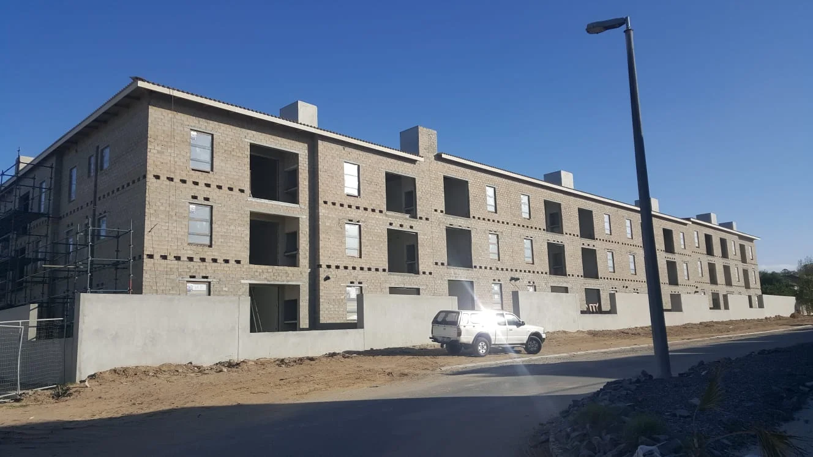
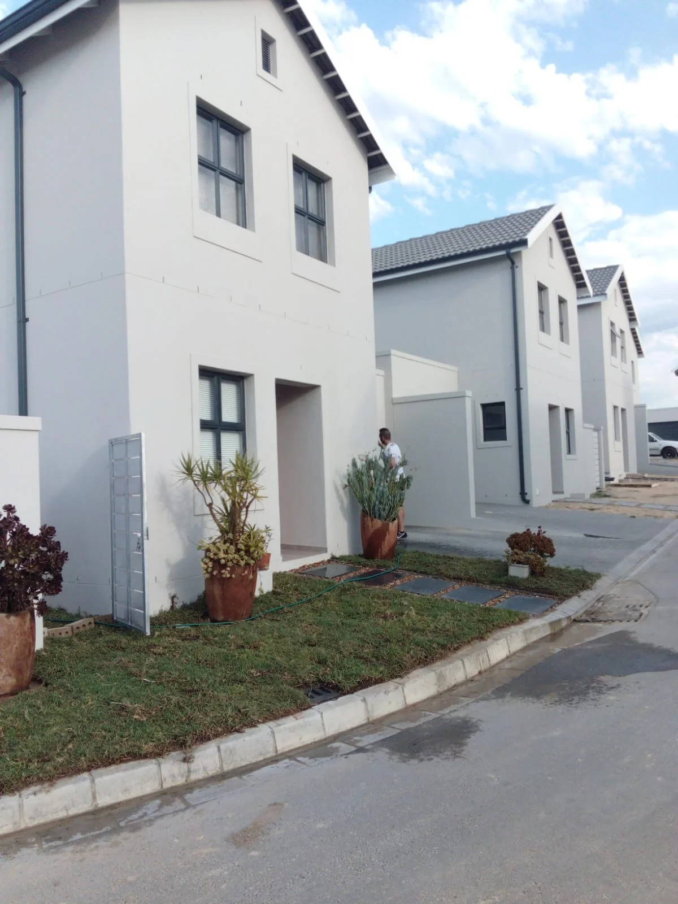

Construction
New residential and commercial building work, approached with attention to site conditions, sequencing, and finish.
Discuss construction ↗
Services
Find the support that fits your brief, your site, and your stage of work.
Our services
Not sure which category fits? Share your plans and we can discuss the scope together.
New residential and commercial building work, approached with attention to site conditions, sequencing, and finish.
Discuss construction ↗Alterations, refurbishment, fit-outs, and finishes that help existing spaces work better.
Discuss renovations ↗Site preparation, foundations, masonry, and related building work, scoped to the needs of the project.
Discuss building works ↗Early brief, feasibility, programme, and design coordination support before work begins. Specialist design services are scoped with the appropriate professionals.
Discuss planning ↗Practical input on scope, procurement, cost considerations, and delivery decisions.
Discuss consulting ↗Alignment of the programme, people, information, and site activities during the build.
Discuss coordination ↗How to begin
Share the type of project, location, stage, and ideal timeframe. We will use that context to shape the first conversation.
Send an enquiry ↗